<h1>
  ウェブサイトの例
</h1>
<style type="text/css">
  body {
    padding: 10px;
  }
  
  h1 {
    font-size: 4em;
    text-align: center;
    line-height: 0.95em;
    font-weight: bold;
    color: transparent;
    background: repeating-linear-gradient(45deg, #E60012 0.1em 0.2em, #F39800 0.2em 0.3em, #FFF100 0.3em 0.4em, #009944 0.4em 0.5em, #0068B7 0.5em 0.6em, #1D2088 0.7em 0.8em, #CFA7CD 0.8em 0.9em);
    -webkit-background-clip: text;
    padding: 20px;
  }
  
  ul {
    list-style: none;
    display: grid;
    grid-template-columns: repeat(auto-fill, minmax(200px, 1fr));
    gap: 15px;
  }
  
  ul li a {
    display: grid;
    grid-auto-flow: row;
    text-decoration: none;
    text-align: center;
  }
  
  ul li a img {
    width: 100%;
    height: auto;
  }
  
  footer {
    text-align: right;
  }
</style>
<ul>
  <li>
    <a href="./sample/1/index.html">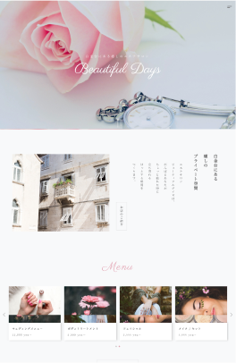女性向けのエステサロン</a>
  </li>
  <li>
    <a href="./sample/2/index.html">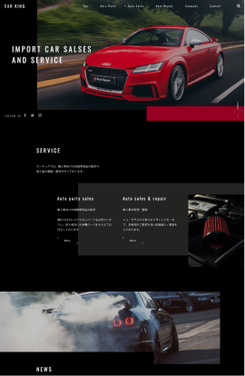男性向けの輸入車販売店</a>
  </li>
  <li>
    <a href="./sample/3/index.html">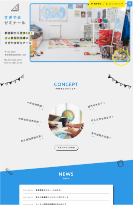子ども向けの学習塾</a>
  </li>
  <li>
    <a href="./sample/4/index.html">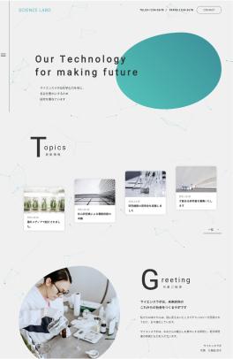科学的な研究所</a>
  </li>
  <li>
    <a href="./sample/5/index.html">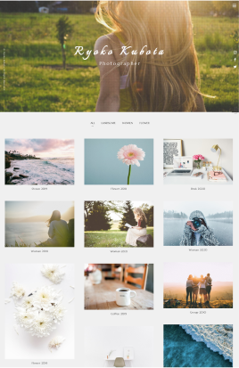写真ギャラリー</a>
  </li>
  <li>
    <a href="./sample/6/index.html">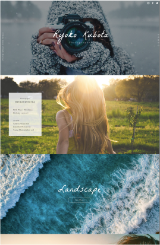大きく写真を見せる</a>
  </li>
  <li>
    <a href="./sample/7/index.html">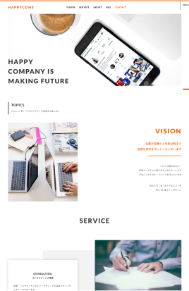ミニマルな企業サイト</a>
  </li>
  <li>
    <a href="./sample/9/index.html">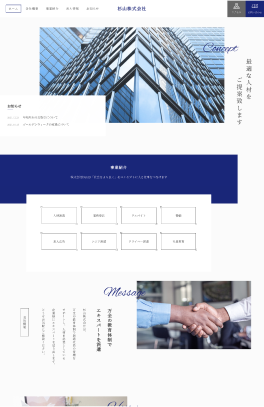堅実的な企業サイト</a>
  </li>
  <li>
    <a href="./sample/10/index.html">映画・音楽サイト</a>
  </li>
  <li>
    <a href="./sample/11/index.html">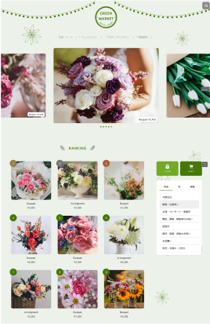花屋のECサイト</a>
  </li>
  <li>
    <a href="./sample/12/index.html">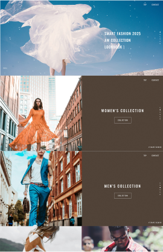アパレルサイト</a>
  </li>
  <li>
    <a href="./sample/13/index.html">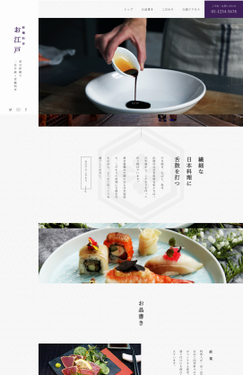和風の老舗料亭</a>
  </li>
</ul>
<footer>
  <small><a href="https://coco-factory.jp/ugokuweb/">出典: 動くWebデザインアイディア帳</a></small>
</footer>